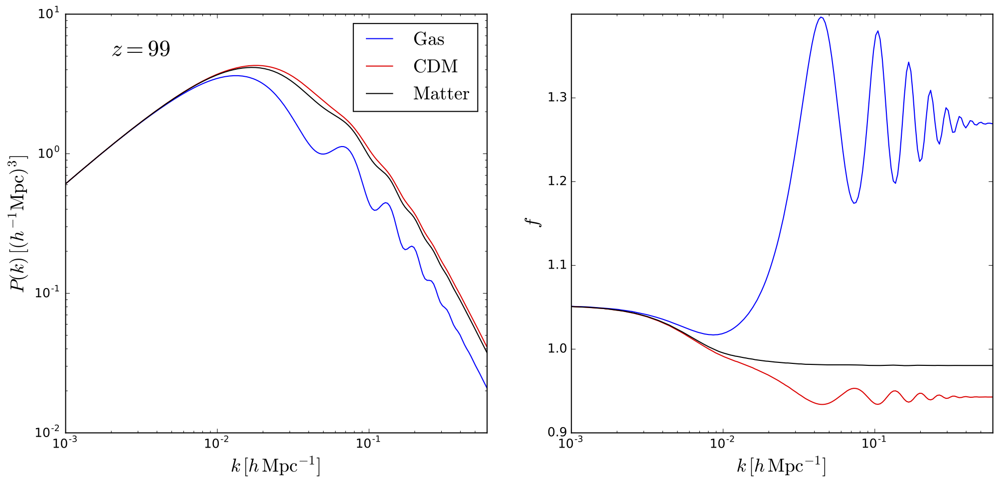

Initial conditions
The standard procedure used to generate the intial conditions of an hydrodynamic simulation is to compute displacements and peculiar velocities employing the Zel'dovich approximation, or 2LPT, considering that both cold dark matter and gas have the same power spectrum and growth rates.
The above figure shows the power spectrum (left) and growth rate (right) of cold dark matter (red), gas (blue) and total matter (black) at z=99 for a Planck cosmology from CAMB. It can be seen that gas and cold dark matter are clearly behaving differently at those redshifts, the typical ones employed when generating the initial conditions of cosmological simulations.
Setting up properly the simulation initial conditions is important. There are two regimes where this could make a big different: 1) when percent precision is required and 2) at high-redshifts.
In Zennaro et al. 2016 we pointed out that in the case of massive neutrinos, where the growth factor and rate of CDM+baryons is scale-dependent, a subpercent agreement between the results of N-body on large-scales and linear theory can not be reached if the initial conditions are not properly generated.
There are several ways to generate the initial conditions, depending on the purpose of the simulation. Among other, one can rescale the final redshift power spectrum and growth rate, as we did in Zennaro et al. 2016, or use the output of a Boltzmann code at the simulation starting redshift, as we explained in Valkenburg & Villaescusa-Navarro 2017.
Generating the simulation initial conditions requires two steps. First, obtain the power spectra and growth rates of the different components. Second, compute displacements and peculiar velocities through Zel'dovich or 2LPT. Matteo Zennaro wrote reps, a publicly available code, that will rescale the final redshift power spectra and growth rates of a given cosmology to the starting redshift of a simulation. There are several codes to compute displacements and peculiar velocities for several species that take into account that growth rates/factors are scale-dependent. Wessel Valkenburg wrote Falcon and I modified Volker Springel N-GenIC to be able to deal with this. N-GenIC-growth is available upon request.